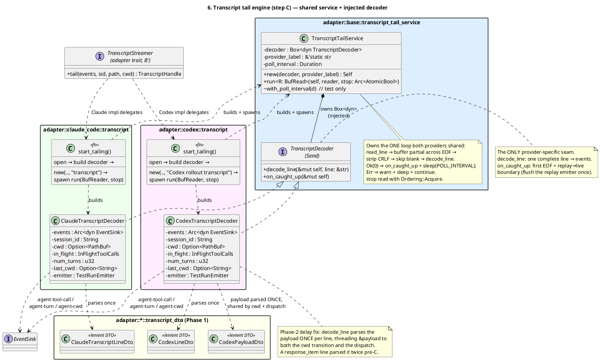
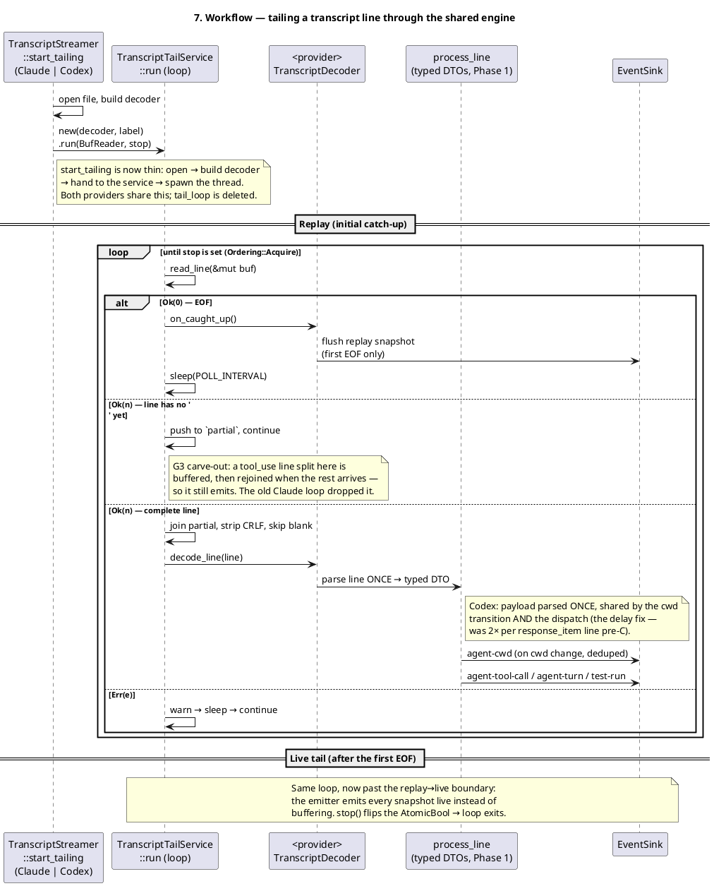

How the duplicated transcript watchers for Claude Code and Codex CLI collapsed into a single shared engine — the same engine now powers Kimi Code observability, including turns, tools, lifecycle, and sub-agent activity.
Both agents tail a growing JSONL transcript to surface live activity.
Each had its
own ~70-line read-loop, and they had drifted apart. We
hoisted that loop into one TranscriptTailService driven
by an injected TranscriptDecoder — the
only provider-specific seam.
Net result: one set of buffering rules instead of two, a Claude bug fixed (split lines no longer dropped), and Codex's per-line work cut from two JSON parses to one — all behavior-neutral and pinned by deterministic tests.
Vimeflow watches each agent's transcript file and emits
agent-tool-call, agent-turn, and
agent-cwd events as the agent works. The mechanics are
identical in spirit: open the file, read it line by line, and since the
file is still being written, buffer a trailing partial line across the
end-of-file boundary, strip CRLF, skip blanks, and re-poll every
500 ms.
That logic lived twice — once in
claude_code/transcript.rs, once in
codex/transcript.rs — and the two copies had quietly
diverged into two real bugs:
tool_use line was split across a read boundary, each
half failed JSON parsing and the event was
silently dropped.
response_item line's payload
twice — once to derive the cwd, again to dispatch —
doubling serde cost on the most numerous lines during replay.
Two copies of "the same" loop is exactly where bugs like these hide. The fix is structural: have one loop, and let each agent contribute only the part that's genuinely different.
The loop becomes TranscriptTailService. Everything
provider-specific — how a single line turns into events, and what to do
at the replay→live boundary — moves behind one tiny trait,
TranscriptDecoder:
pub(crate) trait TranscriptDecoder: Send {
/// Decode one complete (newline-stripped, non-blank) line.
fn decode_line(&mut self, line: &str);
/// First EOF of each catch-up = the replay→live boundary.
fn on_caught_up(&mut self);
}
The service owns the read/buffer/normalize/poll loop and holds a
Box<dyn TranscriptDecoder>. Each provider supplies a
decoder that owns its per-session state (in-flight tool calls, turn
count, last cwd, the replay-aware emitter).
start_tailing shrinks to almost nothing:
let decoder = CodexTranscriptDecoder::new(events, session_id, cwd);
let service = TranscriptTailService::new(Box::new(decoder), "Codex rollout transcript");
std::thread::spawn(move || service.run(BufReader::new(file), stop_clone));
TranscriptTailService owns the loop;
TranscriptDecoder is the single provider seam; the two
decoders implement it and parse the Phase-1 typed DTOs.
start_tailing just builds and spawns.
The service reads a line and dispatches on exactly one of four outcomes
— EOF, a partial line, a complete line, or a read error. Complete lines
go to decode_line; the first EOF of each pass calls
on_caught_up, which is how the emitter knows replay is over
and live tailing has begun.

The buffering, CRLF stripping, blank-skipping, poll cadence, and
stop semantics live in exactly one place. Both
tail_loops are deleted.
A tool_use line split across the EOF boundary is now
buffered and rejoined, so it emits. An end-to-end test splits a real
line where neither half is valid JSON and asserts the event still
fires.
Codex's process_line now parses each line's payload
once and threads it to both the cwd check and the
dispatch. A response_item line went from 2 serde parses
to 1 — on the most numerous lines, during the heaviest moment
(catch-up replay).
Adding Aider or Cursor no longer means re-implementing a tail loop
with its own buffering edge cases — just a
TranscriptDecoder with two methods. The hard, shared
part is already solved and tested.
A scripted BufRead drives the service through
partial-survives-EOF, truncated-never-emits, CRLF stripping,
blank-skipping, and read-error-recovery —
no real files, threads, or sleeps. The frozen
invariants (replay→live boundary,
error→warn→sleep→continue) are now
regression-locked rather than implied by two hand-rolled loops.
response_item line
Behavior-neutral everywhere except the one sanctioned change (the G3
split-line fix). The frozen constraints from the original design — event
shape, concurrency ordering, the
Ordering::Acquire stop signal, the 500 ms poll,
first-EOF replay flush — all carry forward unchanged. A local Codex
review found no correctness regression.
This is step C of the
agent::adapter refactor (#246): the monolithic AgentAdapter trait became five focused
pub(crate) traits, the status and transcript parsers gained
typed lenient DTOs (step A), and the two transcript loops became this
one engine. The only remaining piece is the deferred
Step F capstone — hoisting the whole session lifecycle
behind a single class — which earns its own spec now that the services
it would orchestrate exist.